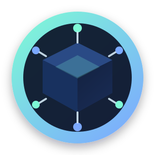

Pin Window
24h
Initial host responsibility before requester handoff.

DECENTRALIZED ARCHIVE BOXDecentralized Archiving Network
Decentralized Archive Box turns web preservation into a coordinated peer network. Anyone with a node can request, process, host, and serve archives while keeping a healthy contribution ratio.
Pin Window
24h
Initial host responsibility before requester handoff.
Archive Modes
4
FULL_WARC, ZIP_WARC, MEDIA_YTDLP, and GALLERY_DL profiles.
Collection Privacy
Owner-controlled
Public/private and moderated submissions.
Flow
A worker submits a URL and preferences like country and archive mode.
An eligible online node claims the task, captures the site, and publishes hash + storage URI.
Peers serve available archives, and ratio scoring rewards users who contribute more than they consume.
Capabilities
Create, edit, delete, and fork collections with names, descriptions, and archive sets.
Collection owners can enable submissions and approve or deny each incoming archive.
Request intake applies configurable blocked terms/hosts to reject obvious illegal-content markers.
Workers can be selected by country preference while search only returns currently available archives.
Phase 2 API
POST /api/archiveteam/register
POST /api/archiveteam/login/challenge
POST /api/archiveteam/login/complete
POST /api/archiveteam/requests
POST /api/archiveteam/requests/claim
POST /api/archiveteam/requests/fulfill
POST /api/archiveteam/collections
POST /api/archiveteam/collections/<id>/submit
POST /api/archiveteam/submissions/<id>/review
POST /api/archiveteam/collections/<id>/forkBuilt in this repository and ready for frontend integration.